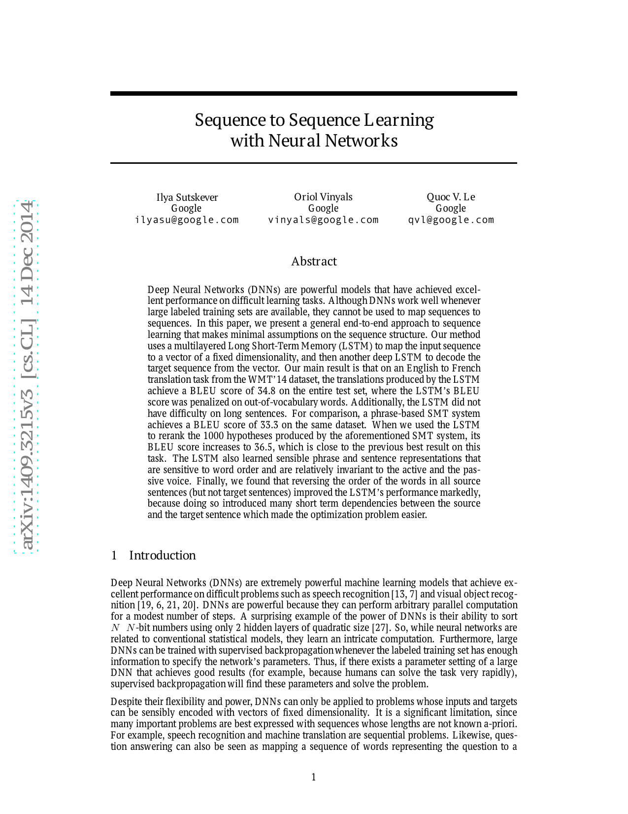
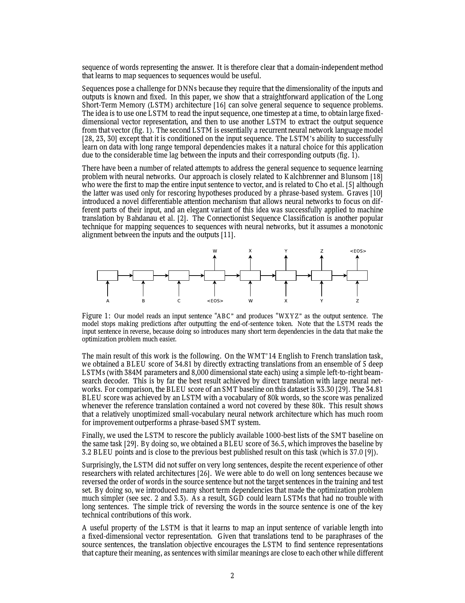
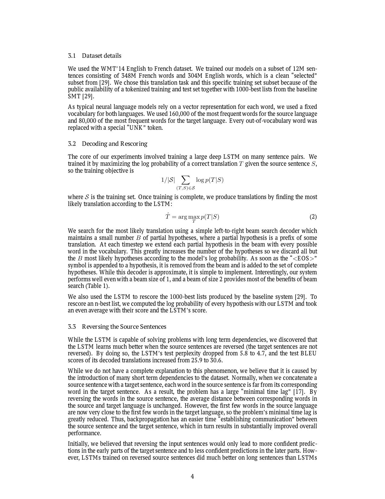
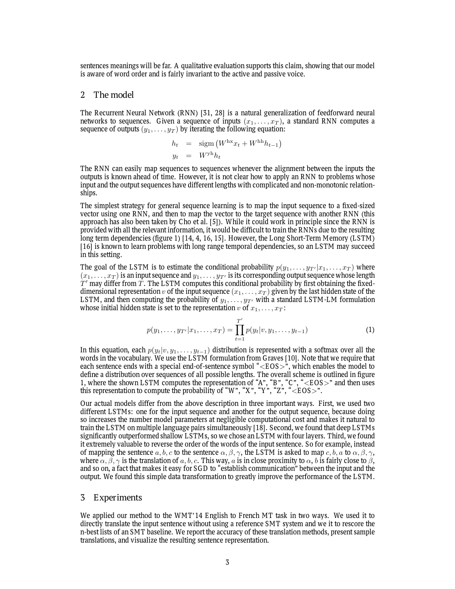
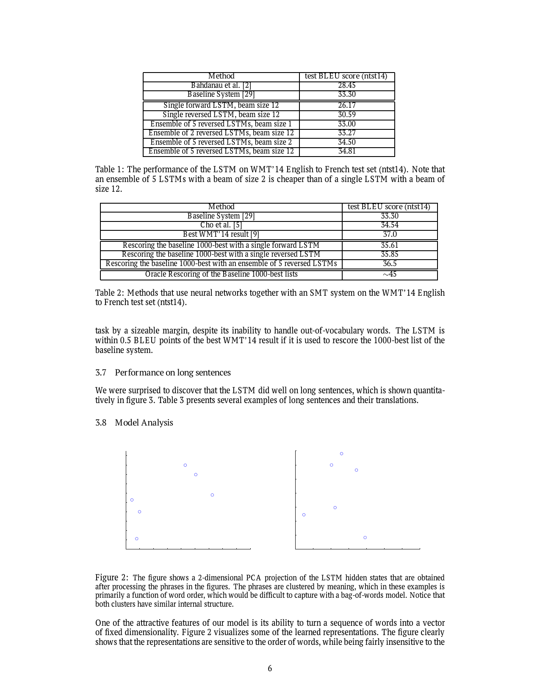

本教程按依赖顺序组织：先理解为什么需要序列到序列学习（Sequence-to-Sequence，Seq2Seq），再学循环神经网络（Recurrent Neural Network，RNN）与长短期记忆网络（Long Short-Term Memory，LSTM），最后进入模型、训练与注意力机制（Attention）铺垫。无需事先系统学过深度学习，但需接受「向量、矩阵乘法、softmax、梯度下降」等基础概念。
2014 Sutskever — Seq2Seq + LSTM 编码器-解码器（Encoder-Decoder）
2014 Bahdanau — Attention（注意力）缓解固定向量瓶颈
2017 Vaswani — Transformer 彻底取代 RNN 序列建模
《Sequence to Sequence Learning with Neural Networks》（2014）是现代 序列到序列（Sequence-to-Sequence，Seq2Seq）框架的开山之作，也是神经机器翻译（Neural Machine Translation，NMT）——用神经网络端到端完成翻译，而非传统统计流水线——真正开始的标志。
在这篇论文之前，将输入序列映射到输出序列通常依赖复杂的人工设计：语法规则、词对齐模型、翻译词典、人工特征等。本文首次在大规模任务上证明：一个端到端神经网络可以直接学习「序列 → 序列」的映射。
English sentence → Neural Network → French sentence
Deep Neural Networks (DNNs) are powerful models that have achieved excellent performance on difficult learning tasks. Although DNNs work well whenever large labeled training sets are available, they cannot be used to map sequences to sequences. — Abstract, Sutskever et al. (2014)
假设输入英文 I love you，期望输出法文 Je t'aime。
实验 A · 独立神经翻译（Standalone NMT）：模型自己从英文直接生成法文，不借助任何传统翻译系统。就像学生闭卷考试——全程靠神经网络。
实验 B · 重打分（Rescoring / Reranking）：先让传统统计机器翻译（Statistical Machine Translation，SMT）系统给出 1000 个候选译文，再由 LSTM 给每个候选打分，选最高分的。就像先让多位译者各写一版草稿，再由评委挑出最好的一版。神经网络进入翻译领域时，常走 B 再走向 A。
论文中的 DNN（Deep Neural Network，深度神经网络）在这里特指前馈神经网络（Feedforward Network）：构图时输入、输出向量维度就固定死了，不能随句子变长变短。
| 例句 | 输入长度 | 输出长度 |
|---|---|---|
| "I love you" → "Je t'aime" | 3 words | 2 words |
| "This paper proposes …" → 法文译文 | ~20 words | ~27 words |
引言先列举若干天然是序列形式的任务：语音识别、机器翻译、问答（问题词序列 → 答案词序列）。它们的共同点是长度事先无法确定。
Despite their flexibility and power, DNNs can only be applied to problems whose inputs and targets can be sensibly encoded with vectors of fixed dimensionality. It is a significant limitation, since many important problems are best expressed with sequences whose lengths are not known a-priori. — §1 Introduction
这段话说明的是前馈 DNN 的根本限制：输入与目标必须能编码为固定维向量，因而与变长序列任务不匹配。
假设你硬把 I love you 塞进一个长度 100 的向量：前 3 维存词，后面 97 维全是 0。那 This paper proposes a new method 有 6 个词，Je t'aime 只有 3 个词——输入输出长度每次都不一样，网络接口却在设计时就写死了「100 进、10 出」。这不是「多训练几次」能解决的，是结构不匹配。
RNN（Recurrent Neural Network，循环神经网络）把前馈网络改成「带记忆」：每读入一个词，就更新一次隐藏状态（hidden state）——可以理解为模型此刻对「已读内容」的压缩摘要。
把每个词依次喂入，隐藏状态逐步更新（下表概率为示意）：
| 时刻 | 读入词 xt | 更新后 ht「记住了什么」 |
|---|---|---|
| 1 | I | 句首是人称代词 |
| 2 | love | 主语 + 动词「爱」 |
| 3 | you | 完整语义：「我爱你」 |
关键：h3 里既有 you 的信息，也通过链式更新保留了 I 和 love。同一套权重 Whx, Whh 在每个时刻重复使用。
论文 §2 给出（原文用 sigmoid，实践中常用 tanh）：
直觉：ht = 新信息 + 旧记忆（经线性变换与非线性压缩）。
考虑句子：I …（中间隔 100 词）… love。词 I 的信息须经 h1→h2→…→h100 才能影响后面，路径极长。
训练时，损失对早期状态的梯度为连乘形式：
若每项平均 < 1（如 0.9100 ≈ 2.7×10−5），梯度几乎消失；若平均 > 1（如 1.1100 ≈ 13780），则梯度爆炸。这就是经典的 Vanishing / Exploding Gradient。
论文指出：用 RNN 把输入编码为固定向量、再用另一 RNN 解码，原则上可行（信息都在向量里），但会产生很长的依赖链，训练困难。这里强调的是优化问题，不是表达能力问题——理论上 RNN 可以表示该映射，实际上梯度传不过去。
Encoder 读完整个句子才得到 hT，Decoder 才开始生成。若 Decoder 第一个输出词主要依赖输入句首，则信息路径 ≈ 编码步数 + 解码步数，长句上可超过 100 步。
A → B → C → D → E → h5 → Decoder 生成 α …
句子 I …（100 个词）… love：词 I 的信息要经过 100 次 ht→ht+1 传递才能影响 love 处的预测。训练时梯度也要沿同一路径反向走 100 步；每步乘以一个 <1 的数，100 步后梯度就接近 0——模型不是「看不见」I，而是学不到如何用它。
论文原文："difficult to train due to long term dependencies"（长期依赖导致训练困难）——指优化难度，而非「模型记不住」。
LSTM（Long Short-Term Memory，长短期记忆网络）的核心贡献不是「三个门」本身，而是引入细胞状态（Cell State）ct，使误差可在记忆通道上近似恒等传播（CEC，Constant Error Carousel，恒定误差传送带）。
… the Long Short-Term Memory (LSTM) [16] is known to learn problems with long range temporal dependencies, so an LSTM may succeed in this setting. — §2 The model
读到 love 时，LSTM 可以决定：
I 还要保留吗？（翻译里通常要保留）love 这条新信息写入多少？love 编码成什么内容？若 ft≈1，细胞状态 ct 几乎原样传递——I 的信息不必每步都经过剧烈改写，梯度也能沿 ct 通道走捷径。
当 ft ≈ 1 时，ct ≈ ct−1，信息可沿 cell state 几乎不衰减地传播；反向传播时 ∂ct/∂ct−1 ≈ 1，梯度不会像普通 RNN 那样被反复压缩。
| 维度 | 标准 RNN | LSTM |
|---|---|---|
| 状态 | 仅隐藏状态 ht | 隐藏状态 ht + 细胞状态 ct |
| 长期依赖 | 梯度连乘易消失/爆炸 | CEC 使 ∂ct/∂ct−1 ≈ 1 |
| 在 Seq2Seq 中 | 理论上可行，训练极难 | 论文选用，能学习长距离时间依赖 |
| 梯度裁剪 | 常需要 | 仍需要（LSTM 缓解消失，但不杜绝爆炸） |
论文方案：编码器（Encoder） LSTM 把整句源语言读完后压成一个固定向量 v；解码器（Decoder） LSTM 以 v 为初始记忆，自回归（autoregressive）地一个词一个词生成目标语言——每生成一个词，就把它喂回 Decoder 作为下一步输入。
① Encoder 读源句（论文会反转源句，此处先忽略）：依次读 I → love → you → <EOS>（End Of Sequence，句末标记）。读完后末状态即为 v——整句英文的 8000 维「摘要」。
② Decoder 生成法文：以 v 初始化，预测第一个词 → Je；把 Je 喂回，预测 → t'aime；再喂回，预测 → <EOS>，停止。
③ 概率怎么算：每个位置对词表里所有词做 softmax（归一化指数函数，把分数变成概率分布），选出概率最高的词（或交给 Beam Search，见第 07 章）。
其中 v 为 Encoder 最后时刻的隐藏状态；每个 p(yt|…) 为词表上的 softmax。句子以特殊符号 <EOS> 结束，从而对任意长度序列定义分布。

The idea is to use one LSTM to read the input sequence, one timestep at a time, to obtain large fixed-dimensional vector representation, and then to use another LSTM to extract the output sequence from that vector. — §1 Introduction
与论文描述的细微差别：实际模型使用两个独立 LSTM（非同一网络兼编解码）、4 层深度、源句反转——见下一章。
Encoder 与 Decoder 各用一套 LSTM，而非共享同一网络。
… increases the number of model parameters at negligible computational cost … — §2
本质：增加模型容量（Model Capacity，模型能存储的模式量）。编码（理解）与解码（生成）是两种不同能力。
类比：Encoder 像「读英文小说做笔记」，Decoder 像「根据笔记写法文作文」。让同一个人用同一套笔记格式兼做两件事，往往互相牵制。拆成两个 LSTM，参数量几乎翻倍，但各自专精，论文发现几乎不增加额外计算负担。
… deep LSTMs significantly outperformed shallow LSTMs … — §2
每增加一层，困惑度约降低 10%。本质：增强表示能力（Representation Power）。以 2014 年标准，4 层已属「很深」。
将源语言词序反转，目标句不变：
英 → 法：I am happy → Je suis heureux。正常顺序下，Encoder 先读 I，但要等很久 Decoder 才在末尾生成 heureux，首尾对齐路径极长。
反转源句为 happy am I 后：Encoder 最后读到的词是 I，紧接着 Decoder 就要生成句首 Je——源句第一个实义词与目标句第一个词在时间上紧邻，梯度更容易建立联系。论文 BLEU 从 25.9 提到 30.6，困惑度从 5.8 降到 4.7。
效果：测试困惑度 5.8→4.7，BLEU 25.9→30.6（单模型，beam=12；beam 见第 07 章）。

By reversing the words in the source sentence, the average distance between corresponding words in the source and target language is unchanged. However, the first few words in the source language are now very close to the first few words in the target language, so the problem's minimal time lag is greatly reduced. — §3.3
| 技巧 | 改变的是什么 | 类型 |
|---|---|---|
| 双 LSTM | 参数量 / 容量 | 模型能力 |
| 4 层 LSTM | 层次表示深度 | 模型能力 |
| 源句反转 | 输入-输出信息路径长度 | 优化难度（非模型容量） |
论文使用 WMT'14（Workshop on Machine Translation，机器翻译国际评测）英译法任务，筛选子集 1200 万句对。词表：源语言 16 万词，目标语言 8 万词；遇到词表外的词（OOV，Out-of-Vocabulary）统一替换为 UNK（Unknown 未知词标记）。
即：给定源句 S，让模型给正确译文 T 尽可能高的概率；除以源句长度做归一化。
源句 I love you，正确译文 Je t'aime。训练希望：
log p(Je t'aime | I love you) 尽可能大——即模型「看到英文，给正确法文很高分；给乱译的句子很低分」。
推理时要找概率最高的整句译文 T̂。但法文句子有无穷多种组合，无法穷举。Beam Search（束搜索）是实用的近似算法：每步只保留当前最有希望的 B 条「半成品句子」（部分假设），不断扩展、筛选，直到生成 <EOS>。
为便于手算，假设 Decoder 词表极小，每步只有三个候选，概率为示意值。真实论文词表有 8 万词，但原理相同。
第 1 步：预测第一个法文词
| 候选首词 | 概率（示意） |
|---|---|
Je（正确开头） | 0.55 |
Tu（也合理，但本句不对） | 0.30 |
Il | 0.15 |
beam=1（贪心解码，Greedy）：只保留概率最高的一条路径。
Je（0.55）Je 后假设 t'aime 概率 0.70 → 累计 0.55×0.70=0.385Je t'aime，碰巧正确——但一旦某步贪心选错（如先选了 Tu），后面无法回头beam=2：每步保留概率最高的 2 条前缀。
| 步骤 | 保留的 2 条路径（累计概率） |
|---|---|
| 第 1 步 | Je (0.55) · Tu (0.30) |
| 第 2 步 | Je t'aime (0.385) · Je vous aime (0.11) — Tu 分支扩展后概率太低被淘汰 |
| 第 3 步 | Je t'aime <EOS> 胜出 → 最终译文 Je t'aime |
beam=2 的意义：允许模型在前几步「暂时保留次优选择」，避免一步走错满盘皆输。论文发现 beam=2 已能拿到 beam=12 的大部分收益，因为集成多模型后边际收益递减。
论文经验：beam=1 已有不错表现；beam=2 即可获得大部分收益（Table 1）。5 模型集成 + beam=2 的 BLEU 34.50，甚至优于单模型 beam=12 的 26.17（未反转）——说明模型集成与源句反转比单纯加大 beam 更划算。
SMT 系统对 I love you 可能给出 1000 个候选，例如：
Je t'aime — SMT 分 0.82Je vous aime — SMT 分 0.79Tu m'aimes — SMT 分 0.75LSTM 分别计算 log p(T|S)，与 SMT 分数等权平均后重排。若 LSTM 给 Je t'aime 很高分，它会被推到第一位。5 模型集成可达 BLEU 36.5，接近当年最佳 37.0。

| 项 | 值 |
|---|---|
| 深度 | 4 层 LSTM |
| 宽度 | 每层 1000 cells |
| 词嵌入 | 1000 维 |
| 词表 | 源 160k / 目标 80k |
| 句向量 | 8000 实数（4×1000 隐藏 + 1000 细胞状态） |
| 总参数 | 384M（其中 64M 为纯循环连接） |
| 初始化 | Uniform[-0.08, 0.08] |
| 优化器 | SGD（Stochastic Gradient Descent，随机梯度下降），无 momentum，学习率 lr=0.7；5 个 epoch 后每半 epoch 减半 |
| Batch | 每批 128 句；梯度除以 128 做平均 |
| 训练时长 | 7.5 个 epoch；8 块 GPU 约 10 天 |
LSTM 缓解梯度消失（vanishing），但仍可能出现梯度爆炸（exploding）。每 batch 计算梯度范数 s = ‖g‖2；若 s > 5，则按比例缩放到 5，防止一步更新把权重「冲飞」。
假设某 batch 算得 ‖g‖2 = 20，阈值 5。不裁剪的话，参数更新步长是正常情况的 4 倍，训练可能震荡甚至发散。裁剪后等效于把梯度缩小为原来的 5/20 = 1/4，更新更稳。
随机组 batch 时，一句长句会把整批 padding 到该句长度，短句大量计算浪费在 <PAD>（填充符，无意义占位）上。按长度分桶，使同批句子长度接近，训练加速约 2×。
一个 batch 里混了两句话：
I love you（3 词）The conference …（50 词）不分工时：短句被 pad 到 50，前 3 个位置是真词，后 47 个全是 <PAD>，LSTM 仍要对 47 步空转。分桶后：3–5 词的句子单独成批，只 pad 到 5；50 词附近的句子另成一批——几乎不算 pad，GPU 不算冤枉账。
单卡约 1700 词/秒。8 块 GPU（Graphics Processing Unit，图形处理器；深度学习里借来做大规模矩阵运算）：4 层 LSTM 各跑一层（流水线）；另 4 块拆分 softmax（1000×80000 的大矩阵乘法）。最终约 6300 词/秒。
本章集中回答 LSTM「怎么训练」「输入很长怎么办」「同一层 1000 个单元是否共享权重」等常见问题。
把 RNN 按时间展开成「极深的前馈网络」，再对共享权重做标准反向传播；每个时间步的梯度贡献相加后，才更新同一套 W。
前向：读 I→love→you，得到 h1,h2,h3，计算损失 L（比如预测下一个词对不对）。
反向：从 L 出发，先算 ∂L/∂h3，再传到 h2、h1——路径就是图 3-1 那条链。对 Whh 的更新 = 三个时间步各自算出的梯度之和。翻译任务中 Encoder 必须读完整句，因此做完整 BPTT，不能半路截断。
单个 batch 内时间步数由该批最长句子决定（固定）；不同 batch 之间可不同——这正是分桶的意义。
一层 1000 个 LSTM 单元共享同一套权重矩阵 W。这让 1000 路计算融合为一次 GEMM（General Matrix Multiply，通用矩阵乘法），GPU 可接近峰值吞吐。
不共享：1000 个单元各有一套 W，参数量 ×1000，且无法合并成一个大矩阵，GPU 并行度差。共享：所有单元、所有时间步用同一个 W，一次矩阵乘法处理整层——这是深度学习能 scale 到亿级参数的关键工程前提之一。
若每层每单元独立参数：还会破坏平移等变性（同样模式出现在不同位置，应学到相同处理方式）——不会带来收益。
「每行数字不同」≠「权重不共享」：它们同属一个矩阵 W；共享的是参数对象，不是数值复制。
| 方法 | BLEU |
|---|---|
| SMT 基线 [29] | 33.30 |
| 单 forward LSTM, beam=12 | 26.17 |
| 单 reversed LSTM, beam=12 | 30.59 |
| 5 reversed LSTM 集成, beam=2 | 34.50 |
| 5 reversed LSTM 集成, beam=12 | 34.81 |
| SMT 1000-best + 5 LSTM 重打分 | 36.5 |
| 当年最佳 WMT'14 [9] | 37.0 |
这是历史上首次纯神经网络在大规模机器翻译上显著超越纯 SMT 基线。
不必死记公式：BLEU 越高，说明模型译文越接近人工参考。论文中：
受限词表（8 万词）意味着遇到罕见词只能输出 UNK，BLEU 会被扣分；尽管如此仍超基线。
令人意外的是，反转训练后 LSTM 在长句上表现良好（Figure 3）：35 词以内几乎无衰减。论文 Table 3 给出多条长句翻译样例。

… the representations are sensitive to the order of words, while being fairly insensitive to the replacement of an active voice with a passive voice. — §3.8 Model Analysis
句向量可视化证明 Encoder 能学到有意义的表示；同时也暴露固定向量瓶颈——整句无论多长，最终只压进一个 v。这正是后续 Attention（注意力机制）要解决的问题。
翻译一句 80 词的学术长句。Encoder 读完后，所有信息——主语、大量修饰语、从句结构——都要塞进同一个 8000 维的 v。Decoder 生成第 1 个词时看一次 v，生成第 50 个词时还是只看这同一个 v，无法「回头」精确定位源句第 37 个词说了什么。
类比：让你读完整篇论文后记下全部细节，然后闭卷默写译文——没有笔记、不能翻页，长文必然丢信息。Attention 的做法相当于：写译文每个词时，都允许你扫一眼原文最相关的句子片段。
UNK。论文 Related Work 已引用 Bahdanau et al. [2]：他们用注意力机制克服 Cho et al. 在长句上的性能问题。两篇工作几乎同期：Sutskever（NIPS 2014，投稿更早）在定稿时看到 Bahdanau 预印本并引用；Bahdanau（arXiv 2014.09，ICLR 2015）是对固定向量瓶颈的直接改进。
Seq2Seq 固定向量 c → 长句/对齐困难 → Attention 让 Decoder 每步访问全部 Encoder 状态 → Transformer 用自注意力取代 RNN 本身
| 时间 | 论文 | 贡献 |
|---|---|---|
| NIPS 2014 | Sutskever et al. | Deep LSTM Encoder-Decoder，源句反转，纯 NMT 超 SMT |
| arXiv 2014.09 / ICLR 2015 | Bahdanau et al. | Attention：动态对齐，缓解瓶颈 |
| NIPS 2017 | Vaswani et al. | Transformer：自注意力，并行训练 |
这三篇构成从 Seq2Seq → Attention → Transformer 的完整主线，也是理解现代 Agent 与注意力机制的推荐路径。
Q1. LSTM 单元是怎么训练权重的？
通过 BPTT：时间展开 → 反向传播 → 各时间步梯度对共享 W 求和 → 梯度裁剪 → SGD 更新。
Q2. 输入很长怎么办？
本文编码器必须读完整句，用完整 BPTT。手段：LSTM 缓解消失、源句反转缩短有效路径、梯度裁剪防爆炸、分桶提高效率。截断 BPTT 不用于标准 MT。
Q3. 训练时时间步长是否固定？
batch 内固定（由最长句决定）；batch 间可变。分桶使同批长度接近。
Q4. 每个 LSTM 单元的权重是单一的吗？
同一层内 1000 单元共享一套 W；不同层不共享。所有时间步复用同一 W。
Q5. 四个门分别做什么？
ft 遗忘旧记忆；it 选择写入；gt 候选内容；ot 控制输出。核心通道是 cell state ct。
Q6. 每单元独立权重会更好吗？
不会。参数量爆炸、无法并行、破坏等变性。
Q7. 共享权重如何变成矩阵乘法？
千路标量运算叠成 h = W·x + b，一次 GEMM 利用 GPU 吞吐。
Q8. 每行数字不同是否意味着权重不同？
行对应输出维度分量；共享的是整个参数矩阵 W，不是「每个单元一份拷贝」。
Q9. 能否给一个共享权重的数值例子？
见第 09 章 2 维隐藏、3 步展开；关键是 Whh 在 t=1,2,3 为同一矩阵，梯度三项相加。
Q10. 不同 batch 顺序会导致 W 不同吗？
结构上不会（共享是架构硬约束）。数值上不同 mini-batch 顺序 → 不同梯度轨迹 → 收敛值有差异，与任何 NN 训练的随机性相同。
Q11. 为什么反转源句有效？
不缩短平均对齐距离，但让句首源词靠近句首目标词，减小 minimal time lag，优化更容易；长句收益尤其大。
Q12. LSTM 还需要梯度裁剪吗？
需要。LSTM 主要缓解消失；爆炸仍可能发生。本文阈值 5。
Q13. beam=2 为何够用？
集成多模型后，扩大 beam 边际收益递减；论文 Table 1 显示 beam=2 已接近 beam=12 的集成表现。
Q14. 固定 8000 维向量够用吗？
中等长度尚可；更长句子、更复杂对齐仍受限——这是读 Bahdanau Attention 的前提。
正文采用「首次出现全称 + 缩写」规则；下表供速查。
| 术语 | 含义 |
|---|---|
| Seq2Seq | 序列到序列学习；变长输入映射到变长输出 |
| Encoder / Decoder | 编码器读源句；解码器生成目标句 |
| BPTT | 沿时间反向传播 |
| CEC | Constant Error Carousel；LSTM 细胞状态上的恒等误差通道 |
| BLEU | 机器翻译自动评测指标（n-gram 精确率） |
| Beam Search | 保留 top-B 部分假设的启发式解码 |
| UNK / OOV | 词表外词；本文替换为 UNK 特殊 token |
| SMT | 统计机器翻译（phrase-based 等传统方法） |
| Rescoring | 对候选列表重新打分排序 |
我们证明：一个词汇表有限、几乎不对问题结构做假设的大型深度 LSTM，在大规模 MT 任务上可以超越词表无限的 SMT 系统。LSTM 在 MT 上的成功表明，只要有足够训练数据，该简单方法在许多其他序列学习问题上也会表现良好。
我们对源句反转带来的巨大提升感到惊讶，并得出结论：寻找具有最多短期依赖的问题编码至关重要，因为它们使学习问题简单得多。虽然我们无法在未反转数据上训练标准 RNN（如图 1），但我们相信反转后标准 RNN 应可轻松训练（未实验验证）。
我们也惊讶于 LSTM 能正确翻译极长句子——最初认为有限记忆会导致失败。更重要的是，我们证明简单、直接、相对未优化的方法即可击败 SMT，后续工作很可能带来更高精度。 — §5 Conclusion（译文）